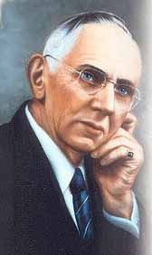

( PDF Version )

Other Major
Themes
3.1 Jesus and Christ
Consciousness
3.2 Reincarnation Past Lives
3.3 Atlantis
and Cayce Atlantean Channelings
3.4 Earth
Changes and Cayce on Earth Changes
Edgar Cayce (March 18, 1877 - January 3, 1945), (the surname pronounced "Casey")
is generally remembered as an American psychic who gave trance discourses on
subjects like astrology, reincarnation, and Atlantis. He may have been the
source for the idea that California would fall into the ocean (though he never
said exactly this). Although Cayce lived before the emergence of the New Age
movement, he remains a major influence on its teachings.
This popular image overlooks what to him were the more important strains within his work such as healing (the vast majority of his "readings" were given for people who were sick) or Christian theology (Cayce being a lifelong, devout member of the Disciples of Christ). Skeptics challenge Cayce's claim to psychic prowess, while conservative Christians doubt this and/or his orthodoxy.
Today there are several tens of thousands of "Cayce people." Most are located in the United States and Canada, but Edgar Cayce Centers are now found in 25 other countries. The Association for Research and Enlightenment (A.R.E), headquartered in Virginia Beach, is the major organization promoting interest in Cayce.
Cayce was born on a farm near Hopkinsville, Kentucky on March 18, 1877. At an early age he gave evidence of his budding talent: he was able to master his school lessons by sleeping on his books. At the age of twenty-one he developed a gradual throat paralysis which threatened the loss of his voice. When doctors were unable to find a cause for his condition, Cayce entered the same hypnotic sleep that had enabled him to learn his school lessons years before. In that state, he was able to recommend a cure which successfully repaired his throat muscles and restored his voice. It was soon discovered that he could do the same for others.
For most of his adult life, Edgar Cayce was able to provide intuitive insights into nearly any question imaginable. When individuals came to him with a question, he would place himself into a sleep-induced sleep state. While in that state he could respond to virtually any question asked. His responses have come to be called "readings". Today his psychic readings constitute one of the largest and most impressive records of intuitive information to emanate from a single individual.
For many years the information dealt mainly with medical problems. Eventually the scope of his readings expanded to include such topics as meditation, dreams, reincarnation, and prophecy. The transcripts have provided the basis for over 300 popular books about Cayce's work.
Mr. Cayce's theories on the end times of this planet are very enlightening and show a global major change in 1998. He prophecized the Sphinx had been built in 10,500 BC and that survivors of Atlantis had concealed beneath it a "Hall of Records" containing all the wisdom of their lost civilization and the true history of the human race. Cayce prophesied that this Hall of Records would be rediscovered and opened between 1996 and 1998. He connected the opening to the second coming of Christ.
Cayce ending every reading by saying, "We are through".
Edgar Cayce gave over 14,000 "readings" during a period of 43 years (1901 to 1944). These are trance discourses which Cayce revealed while in a hypnotic or "sleeping" state. While "awake" he claimed generally not to remember what he had said while "asleep". The readings themselves explain that the unconscious mind has access to information which the conscious mind does not -- a common theory about hypnosis in Cayce's time. Most records come from the period after 1925, when his secretary Gladys Davis recorded the readings, and his wife Gertrude Evans Cayce "conducted" (guided) the readings.
The readings are customarily divided into the following categories:
Life
Readings: 1,920
extant readings
In a life reading, Cayce describes the client's present physical, emotional
and mental condition in terms of past life experience. Most inquirers were
assigned past lives from about twelve main "periods" including Atlantis,
ancient Egypt at the time of "Ra Ta", ancient Persia, Palestine at the time
of Christ, and colonial America. A number of people were told of famous past
lives. Cayce's son Hugh Lynn, for example, was told that he was the apostle
Andrew.
Business Readings:
747 extant readings.Cayce occasionally gave business readings including
advice on business partners, the stock market, business models, etc.
Dream Readings: 630 extant readings.
Edgar Cayce encouraged everyone to interpret and use his or her own dreams
in day-to-day life. A dream reading involved Cayce interpreting the dreams
of clients. As he did with readings on many subjects, Cayce would often
interrupt the person reading the dream and give an interpretation before the
dream had been completely read. He would sometimes fill in parts of dreams
that the dreamer had supposedly forgotten. Unlike Jungian or Freudian dream
interpretation, Cayce did not emphasize highly the importance of symbols. He
said that every individual has his or her own unique symbols. Cayce claimed
that in dreams people could receive valuable insight into their own lives
and that the insight was always of use to the dreamer. Besides regular daily
insight into one's life, he claimed people could communicate with loved ones
dead or alive, remember past life experiences, see a possible future and
experience many other psychic phenomena. He stated that these paranormal
abilities were something anyone could learn.
Other Readings: 954 extant readings
Other Readings are miscellaneous subject matter that does not fit into an
above category. The subject matter included missing persons, buried
treasure, readings given to a spiritual development group, psychic
abilities, auras, prophecy, structure of reality, geology and many other
topics.
Cayce readings are usually referenced using a numeric tag in which the first number is a code representing the recipient (most of their identities remain secret), while the second counts which reading it is, in the case of a person who receives more than one. 5749-14 for example is the fourteenth reading given for person # 5749 (whose assigned number is essentially arbitrary).
Cayce predicted the beginning and end of both the First and Second World Wars, and the lifting of the Depression in 1933. In the 1920s, he first warned of coming racial strife in the United States, and in 1939 he predicted the deaths of two presidents in office;
President Franklin D. Roosevelt died in office in April 1945. In November 1963, President John F. Kennedy was assassinated in Dallas, Texas, when racial tensions in the United States were at their height.
In October 1935, Cayce spoke of the coming holocaust in Europe. The Austrians and Germans, he said, and later the Japanese, would take sides.
Two of Cayce's major predictions concerned the futures of China and the Soviet Union, the world's great Communist giants. In 1944, he prophesied that China would one day be "the cradle of Christianity as applied in the lives of men." Through Russia, he said "comes the hope of the world. Not in respect to what is sometimes termed Communism or Bolshevism -- no! But freedom -- freedom! That each man will live for his fellow man. The principle has been born there. It will take years for it to be crystallized; yet out of Russia comes again the hope of the world." Russia, he said, would be guided by friendship with the United States. Its attempt to rule "not only the economic, but the mental and spiritual life" of its people was doomed to failure.
Cayce also predicted the possibility of a third world war. He spoke of strifes arising near the Davis Straits, and in Libya, and in Egypt, in Ankara, and in Syria; through the straits around those areas above Australia, in the Indian Ocean and the Persian Gulf."
When asked in June 1943 whether it would be feasible to work towards an international currency or a stabilization of international exchange levels when the war had ended, Cayce replied that it would be a long, long time before this would happen. Indeed, he said, "there may be another war over just such conditions."
Origin and destiny of humanity
- "All souls were created in the beginning, and are finding their way back to whence they came." Cayce believes that human souls were created with a consciousness of their oneness with God. Some "fell" from this state; others - led by the Jesus soul - volunteered to save them. The Earth, with all its limitations, was created as a suitable arena for spiritual growth.Duality - According to Cayce, Atlantean society was divided into two long-lived political factions - a "good" faction called the "Sons of the Law of One," and an "evil" faction called the "Sons of Belial." According to the readings, a major source of turmoil was the Sons of Belial's desire to exploit the Things, sub-humans with animal appendages and low intelligence, and the movements to protect and evolve them by the Sons of the Law of One.
Universal laws - Souls incarnated on the earth are subject to certain spiritual laws such as, "As ye sow, so shall ye reap" (karma) or "As ye judge (others), so shall ye be judged." Properly regarded, such laws represent an aspect of God's mercy whereby no matter what our circumstances, he has promised to guide us in our spiritual path.
From Cayce's perspective, we are not simply physical bodies, instead we are spiritual beings who are having a physical experience entailing personal growth and development. Many individuals have incorrectly assumed that the goal of being in the earth is to simply reach heaven, find enlightenment, or somehow "get out of the earth." And yet, this is a perspective quite different from that contained in the Cayce material. Instead, Cayce believed that as children of God, our mission was to somehow bring spirit into the earth.
The dynamics of our deep and literal connection to God can be found throughout scripture, beginning with Genesis when we are told that God made humankind in the Creator's image. But our relationship with God as our Parent is perhaps no more clearly illustrated than in the Parable of the Prodigal Son (Luke 15:11-24). This parable describes the journey of the soul: we were with God in the beginning, through the power of our free will we were able to make choices that were not necessarily in perfect accord with the Creator. And, at some point, we will "arise" and decide to return to God, regaining our inheritance and experiencing our true relationship with Him.
One of the readings beautifully describes the spiritual nature of humankind in this way:
The readings state that God desires to be expressed in the world through us. The example set by Jesus is apparently a "pattern" of wholeness for each and every soul.Regardless of an individual's religious or personal beliefs, this Christ pattern exists in potential upon the very fiber of their being. It is that part of each of us that is in perfect accord with the Creator and is simply waiting to find expression in our lives.
This Christ pattern was further described as "the awareness within each soul, imprinted in pattern on the mind and waiting to be awakened by the will, of the soul's oneness with God" (5749-14), and its manifestation is the eventual destiny of each and every soul. With this in mind, the readings present Jesus as our "Elder brother," a soul who came to show each one of us the way back to our spiritual Source by perfectly manifesting the laws of the Creator in the earth.
Just as an older sibling can sometimes provide insight and counsel into some of life's difficulties (because he or she went through them first) Jesus as Elder brother can assist us in facing life's challenges. What may surprise individuals is that this fact has nothing to do with religion, it has to do with spirituality and discovering our true relationship with God - a relationship we share with Jesus. The readings not only affirm that Jesus was the Son of God, but they also state the same thing about each and everyone of us. In other words: Jesus was like each one of us and, ultimately, each one of us is destined to be like Him.
EC: To glorify the Christ Consciousness in the Earth . in the lives of those with whom ye come in contact, and to live the same thyself. - Reading 2441-4
Q. What is the meaning and significance of the words Jesus and Christ...?
EC: Just as indicated. Jesus is the man, the activity, the mind, the relationships that He bore to others. Yea, He was mindful of friends, He was sociable. He was loving. He was kind. He was gentle. He grew faint, He grew weak and yet gained that strength that He has promised, in becoming the Christ, by fulfilling and overcoming the world! Ye are made strong in body, in mind, in soul and purpose by that power in Christ. The power, then, is in the Christ. The pattern is in Jesus. - Reading 2533-7
This transformative power of the Christ Consciousness is awakened as individuals act in accord with the pattern set by the example of Jesus' life. In fact, this awakening is the essential purpose for which each soul enters into life.
From Cayce's perspective, Jesus is the Elder brother for all of humankind, deeply committed to assisting all souls in reawakening to the awareness of their oneness with God. This Jesus is not interested in religious conversion, denominationalism, or even mighty personal accomplishments. Instead, He is simply interested in how we treat one another. With this in mind, even in the midst of our diversity as a human family, we share a common spiritual heritage. We are all Children of the same God. We are all part of the one spiritual Source. And, we are all destined to return to our Creator, our Mother/Father, our God.
Unknown Life of Jesus - Cayce presented narratives of Jesus' previous incarnations, including a mysterious Atlantean figure called "Amilius" as well as the more familiar biblical figures of Adam, Enoch, Melchizedek, Joshua, Asaph, and Jeshua. Cayce describes Jesus as an Essene who traveled to India in his youth in order to study Eastern religions. Read more [scroll down]
Reincarnation is the belief that each of us goes through a series of lifetimes for the purpose of spiritual growth and soul development. Cayce's approach does not include the concept of transmigration, which states that it is possible for human beings to be born again as animals. From the standpoint of the Cayce material, souls only occupy human bodies through their spiritual growth and developmental process.
In essence, the Cayce approach to reincarnation provides a philosophical setting to the past focusing on practical ways of dealing with this life: living, growing, and being of service to one another in the present.
For him it wasn¹t nearly as important to who individuals had once been, or even what they had been doing, as it was paramount that they focus on the present and the opportunities and challenges that faced them in this time, in this place, right now.
In terms of remembering your own past lives, the Edgar Cayce information provides a variety of approaches. In fact, oftentimes individuals who received readings would ask about such things as memorable dreams that were on their mind, personal traits and talents that they had always been drawn to, and even intense positive or negative relationships with other people in their lives Cayce described how each of these things could be tied to past-life memories. With these things in mind, in order to remember your own past lives the Cayce readings recommend such things as personal inventories of your talents, abilities, likes, and dislikes; working with meditation and dreams; taking part in imaginative past-life reveries or self-hypnosis, and so forth.
From Cayce's perspective, the reason for believing in reincarnation is not so that we can dwell upon the past or brag about the possibility of once having been someone famous, instead it is to enable a soul to understand the consequences of previous choices and to know that each individual is ultimately responsible for shaping and creating his or her life in the present. From the Cayce readings¹ perspective, the past merely provided a framework of potentials and probabilities. An individual¹s choices, actions, and free will in the present would determine the actual experience lived this time around. Rather than being a fatalistic approach to life, it is much more one of nearly limitless opportunities.
Cayce teaches the reality of reincarnation and karma, but as instruments of a loving God rather than blind natural laws. Its purpose is to teach us certain spiritual lessons. Animals have undifferentiated, "group" souls rather than individuality and consciousness. Once the soul evolves through a succession of animal incarnations and achieves human status, it is not then reborn in animal form. Cayce's view arguably incorporates Theosophical teachings on spiritual evolution. Each person, in his view, existed in a self-conscious form before birth and would exist again after death.
As well as his health readings, Cayce gave many hundreds of so-called "life" readings, during which he would describe his subject's past lives. A number of those readings referred to past incarnations in the legendary lost land of Atlantis. In all, Cayce referred to Atlantis no fewer than seven hundred times in his readings over a span of twenty years.
From Cayce's perspective, we are not simply physical bodies or even physical bodies with souls, but are instead spiritual beings who are currently having a material experience. As souls, we have manifested in the earth in order to learn lessons that will enable us to return to our former state of spiritual awareness. At the same time, one purpose we all have in common is to bring the spirituality of the Creator into the earth.
A soul can choose to be born into either a male or a female body in any given lifetime or, as Cayce called it, an incarnation. A soul selects that environment (parents and family, location, personal obstacles, etc.) which will best allow for the learning of lessons it needs for completeness. The goal is to fully express love in all the challenges which physical life offers.
One's experiences are subject to the choices made with free will. As one grows, he or she learns-or rather remembers-his or her true relationship with God and one's heritage as a spiritual being. With free will, we can turn the challenges life presents to us into stepping-stones toward growth, or we can see them as obstacles and stumbling blocks. Either way, we reap what we have sown. We constantly meet the consequences of previous deeds and attitudes.
One frequently misunderstood concept regarding reincarnation has to do with karma. From the standpoint of the Cayce material, karma is not destiny; it is only memory. These memories are generally unconscious and influence our abilities, our faults, even our relationships with others, but with free will we can meet this memory as a positive or a negative experience. Karma provides us with the potential to learn a lesson we need in order to grow at a soul level, and free will determines whether or not we choose to learn it at this time. The choices we make determine the next set of potential experiences we encounter.
Much more than simply a concept that applies to a limited segment of the world, reincarnation is a philosophy that has-at one time or another-been embraced by all the major religions of the world. It's a concept that can allow us to have compassion for one another because ultimately we are all equal-there is only one God, and we are all His children.
From Cayce's viewpoint, it doesn't really matter if an individual believes in reincarnation or not. For some it can be a helpful concept, for others confusing. The main purpose is to allow individuals to become aware of their true spiritual nature and their ultimate relationship with one another. In fact, if we can think for a moment about the one person in our life whom we love most of all. then we will get an inkling of the goal of reincarnation: to be able to love every single soul, even ourselves, with the very same love.
3.3 Atlantis and Cayce Atlantean
Channelings
Land Mass - The size of Atlantis was equal to that of Europe, including Asia in Europe. He saw visions of a continent which had gone through three major periods of division; the first two about 15,600 BCE, when the mainland was divided into islands. The three main islands Cayce named Poseida, Og and Aryan.
Atlantean Souls - Many people living today are the reincarnations of Atlantean souls, who must now face similar temptations as before.
Blue Stone - Cayce may or may not have predicted the coming of a certain 'blue stone' of Atlantean origin, that was to be found on "an island in the Caribbean" and was to have the power to heal. In 1974 a Volcanic blue pectolite now known as the Larimar was found in the Dominican Republic. References to Blue Stones are also a metaphor for the color blue which goes to this file and on to blue apples, blue grapes, stargates, etc. Everything is connected andmost of what you read that is channeled contains metaphoric content.
Crystals - The Atlanteans had constructed giant laser-like crystals for power plants, and that these had been responsible for the second destruction of the land. In metaphysical circles this colored gemstone is said to have healing powers; as with most crystals and gemstones, there is no scientific evidence that it has any special properties. The final destruction was in part to due to the overcharging of the Crystal which caused a massive explosion. Cayce blamed the final destruction on the disintegration of the Atlantean culture through greed and lust. But before the legendary land disappeared under the waves, Cayce believed there was an exodus of many Atlanteans through Egypt and further afield. Cayce attributed history's Great Flood in part to the sinking of the last huge remnants of Atlantis.
Atlantis Rising - Cayce most specifically timed forecast was that Atlantis would rise again in 1968 or 1969. Needless to say, Cayce was wrong on that count. [Note: However, it was in that time frame that the "Bimini Road" was located in the Atlantic Ocean. Whether this is a "road" or "natural, geologic erosion" is cannot be proven. Atlantis suffered 3 major destructions one of which was the deluge.
Egypt - Next to biblical
times, the most significant era for the "life readings" was a pre-dynastic
Egyptian civilization consisting of Atlantean refugees. Cayce purported to have
been an otherwise unknown pharoah named "Ra Ta" who built a spiritually-based
healing center (the "Temple of Sacrifice") and educational institution (the
"Temple Beautiful"). His diagnostic readings and narratives about the past and
future were supposed to be a continuation of his ancient work. This civilization
also built monuments on the Giza plateau, including the Great Pyramid, and left
records of Atlantis in a "hall of records" located somewhere beneath the Sphinx.
These readings bear a close resemblance to books by AMORC founder H. Spencer
Lewis.
3.4 Earth Changes and Cayce on Earth Changes
The first sign of this change in the Earth's core would be the "breaking up of some conditions" in the South Pacific and "sinking or rising" in the Mediterranean or Etna area. Cayce forecast that, by the end of the century, New York, Los Angeles and San Francisco would be destroyed. He said that "the greater portion of Japan must go into the sea" at this time, and that northern Europe would be "changed as in the twinkling of an eye."
In 1941, Cayce predicted that lands would appear in the Atlantic and the Pacific in the coming years, and that "the coastline now of many a land will be the bed of the ocean. Even many of the battlefields of 1941 will be ocean, will be the sea, the bays, the lands over which the new order will carry on their trade as with one another."
"Watch New York, Connecticut and the like. Many portions of the east coast will be disturbed, as well as many portions of the west coast, as well as the central portion of the United States. Los Angeles, San Francisco, most of all these will be among those that will be destroyed before New York, or New York City itself, will in the main disappear. This will be another generation though, here; while the southern portions of Carolina, Georgia, these will disappear. This will be much sooner. The waters of the Great Lakes will empty into the Gulf of Mexico."
Cayce prophezied that the Earth's axis would be shifted by the year 2001, bringing on reversals in climate, so that where there has been a frigid or semi-tropical climate, there will be a more tropical one, and moss and fern will grow. By this time, he indicated, a new cycle would begin.
Astrology - Edgar Cayce's view of astrology was based on the concept of reincarnation. He felt that it was not the positions of the planets that influence the soul at birth, but that the soul chooses the time in which it wishes to be born. Most of us, according to Cayce, have had lives before this one, and we bring with us talents, abilities, and influences from those past lives. These influences, part of the universal law of cause and effect, are called "karma" in Sanskrit. Cayce also tells us that not only have we had previous lives, but that, between lifetimes, the soul has a life outside the physical world. During these interim periods, the soul experiences levels of consciousness that correspond to the vibratory levels of the different planets.
Cayce referred to these interim lifetime experiences as "planetary sojourns." Because we have had experiences with the vibrations of the different planets between lifetimes, the planets have an internal influence on us when we reincarnate into the earth plane. These influences of the planets are felt by us in the form of "inclinations, tendencies, and urges" (781-5). However, Cayce said, no influence is greater than the human will and the choices we make in our lives every day:Not that there are not definite helps to be attained from astrology, but those who live by same the more oft are controlled rather than controlling their own lives and destinies. Astrology is a fact, in most instances. But astrological aspects are but signs, symbols. No influence is of greater value or of greater help than the Will of an individual. Reading 815-6
The Akashic Records or "The Book of Life" can be equated to the universe's super computer system. It is this system that acts as the central storehouse of all information for every individual who has ever lived upon the earth. More than just a reservoir of events, the Akashic Records contain every deed, word, feeling, thought, and intent that has ever occurred at any time in the history of the world. Much more than simply a memory storehouse, however, these Akashic Records are interactive in that they have a tremendous influence upon our everyday lives, our relationships, our feelings and belief systems, and the potential realities we draw toward us.
It is no exaggeration to state that the computer has transformed (and is still in the process of transforming) the entire planet. Whether it's technology, transportation, communication, education, or entertainment, the computer age has revolutionized the globe and the ways in which we understand and interact with one another. No segment of modern society has gone unaffected. The amount of information now stored in computer memory and crossing the Internet highway daily is literally unfathomable. And yet, this vast complex of computer systems and collective databases cannot begin to come close to the power, the memory, or the omniscient recording capacity of the Akashic Records.
The Akashic Records contain the entire history of every soul since the dawn of Creation. These records connect each one of us to one another. They contain the stimulus for every archetypal symbol or mythic story which has ever deeply touched patterns of human behavior and experience. They have been the inspiration for dreams and invention. They draw us toward or repel us from one another. They mold and shape levels of human consciousness. They are a portion of Divine Mind. They are the unbiased judge and jury that attempt to guide, educate, and transform every individual to become the very best that she or he can be. They embody an ever-changing fluid array of possible futures that are called into potential as we humans interact and learn from the data that has already been accumulated.
Information about these Akashic Records this Book of Life can be found in folklore, in myth, and throughout the Old and New Testaments. It is traceable at least as far back as the Semitic peoples and includes the Arabs, the Assyrians, the Phoenicians, the Babylonians, and the Hebrews. Among each of these peoples was the belief that there was in existence some kind of celestial tablets which contained the history of humankind as well as all manner of spiritual information.
The first reference in Scripture to some unearthly volume is found in Exodus 32:32. After the Israelites had committed a most grievous sin by worshiping the golden calf, it was Moses who pleaded on their behalf, even offering to take full responsibility and have his own name stricken "out of thy book which thou hast written" in recompense for their deed.
Later, in the Old Testament, we learn that there is nothing about an individual that is not known in this same book. In Psalm 139, David makes reference to the fact God has written down everything about him and all the details of his life even that which is imperfect and those deeds which have yet to be performed.
For many individuals this Book of Life is simply an imagery symbol of those destined for heaven and has its roots in the custom of recording genealogical records of names or perhaps early census taking. Traditional religion suggests that this book either in literal or symbolic form contains the names of all those who are worthy of salvation.
The Book is to be opened in connection with divine judgment (Dan. 7:10, Rev. 20:12). In the New Testament, those redeemed by Christ are contained within the Book (Philippians 4), those not found in the Book of Life will not enter the kingdom of Heaven.
As an interesting corollary, in the ancient world, a person's name was symbolic of his or her existence. According to Sir James George Frazer, author of The Golden Bough one of the most extensive volumes on world mythology there was such a bond between one's name and one's existence "that magic may be wrought on a man just as easily as through his name as through his hair, his nails, or any other material part of his person."
In ancient Egypt, to blot a name out of a record was equivalent to destroying the fact that the person had ever even existed.
Closer to our current era, a great deal of contemporary information on the Akashic Records has been made available by both reputable psychics and modern-day mystics individuals who have somehow perceived beyond the limits of three dimensions.
When discussing the Book of Life, he stated it that it was "The record of God, of thee, thy soul within and the knowledge of same." (281-33)
On another occasion (2533-8) Cayce was asked to explain the difference between the Book of Life and the Akashic Records:
Q. The Book of God's Remembrances?
A. This is the Book of Life.
Q. The Akashic Records?
A. Those made by the individual, as just indicated. 2533-8
The Edgar Cayce readings suggest that each of us writes the story of our lives through our thoughts, our deeds, and our interactions with the rest of creation. This information has an effect upon us in the here and now. In fact, the Akashic Records have such an impact upon our lives and the potentials and probabilities we draw toward us that any exploration of them cannot help but provide us with insights into the nature of ourselves and our relationship to the universe.There is much more to our lives, our histories, and our individual influence upon our tomorrows than we have perhaps dared to imagine. By accessing information from the Akashic Records, the universe's computer database, much might be revealed to us. The world as we have collectively perceived it is but a faint shadow of Reality.
Although meditation has long been an accepted practice in the East, it wasn't until the 1960s that it gained acceptance in the West. Today, clinical research has proven that meditation has positive effects on an individual's overall health and well-being, and many physicians now recommend it as a way of helping their patients learn to lower their blood pressure. Interestingly enough, Edgar Cayce was recommending meditation in the late 1920s and 1930s, long before its craze in the 1960s. His approach to meditation emphasized mental and spiritual benefits as well as physical well-being.
Meditation is not musing, not daydreaming; but as ye find you bodies made up of the physical , mental and spiritual, it is the attuning of the mental body and the physical body to its spiritual source. - Cayce Reading 281-41
Meditation promotes coordination at three levels: physically, we begin to relax; mentally, our busied thoughts become quiet and focused; and spiritually, we get reenergized and are able to deal more lovingly and effectively with the people and events around us. By following a few simple steps, anyone can learn to meditate; even beginners may experience the calming effects of a few moments of purposeful silence.If you would like to try to meditate, start by getting into a comfortable position. It's probably best to sit in a chair and keep your spine straight, your feet flat on the floor, and your eyes closed. Find a comfortable position for your hands; place them either in your lap or at your sides. Slowly take a few deep breaths and begin to relax. Inhale the air deep into your lungs, hold it for a moment, then slowly exhale. With your mind, search your body for any obvious tension or tight muscles. You can try to relieve the tension by deep breathing, imagining that the area is relaxed, or by gently massaging any tightness with your fingertips. When you have finished becoming comfortable and relaxed, then you are ready to move on.
Next, focus your mind on one, single, peaceful, calming thought. Instead of thinking about what went on at work or what has to be done with the remainder of your day, try focusing on a thought such as "God is love" or "I am at peace." You can use any spiritual prayer or thought which is meaningful to you. These thoughts are also called "affirmations." The first way to work with an affirmation is to try to clear your mind of everything else.
Actually, from Cayce's perspective, there are two stages to meditation.
The first stage involves thinking about the words of your affirmation. In one of the examples cited above, you would think about the words "God is love." After a few moments of thinking the words, you should be able to move into the second stage, which is feeling the meaning behind those words. For example, you can say the words "God is love"; however, the feeling of those words can be much more powerful than the actual words themselves. It's like the difference between thinking the words, "I love my children" and experiencing the actual feeling behind those words.
Once you begin to feel the meaning of the affirmation, you should attempt to hold this feeling in silent attention. Gently bring your focus back to the words of the affirmation every time your mind starts to wander-that is to say, first begin thinking of the words of the affirmation, then try to concentrate on the feeling behind them. Don't let yourself become discouraged when you find yourself thinking more about distractions than you are focusing upon the affirmation. It will take time to teach yourself to focus on one thought. Spend anywhere from three to fifteen minutes trying to hold the affirmation silently. Longer meditation periods can take place when you have built up some experience.
At the end of your meditation, send out prayers, good thoughts, or peaceful energy to others. If you have been focusing on love, then try to send a sense of that love to someone about whom you're concerned. Simply with a thought, you can also send out the energy of peace to your neighborhood, world leaders, or other countries.
In simplest terms, meditation is the practice of quieting our physical bodies and our minds, and focusing our attention inward instead of upon the world around us. As you begin to practice meditation daily, it will become easier. You might also notice that the sense of peace inside you during meditation will begin to carry over into the different parts of your day. Although some schools of thought suggest that the mind should be blank when you are meditating, Cayce's approach is different. Cayce's material suggests that the mind is a constructive force and allows for the closest attunement possible if used in the right way.
While Cayce sometimes describes particular meditation techniques of sitting or chanting ("Arrr--eee-oommm") the crucial element is that of opening up to divine influences.
The Search For God books say that "Through prayer we speak to God. In meditation, God speaks to us."
Cayce's concept of meditation has some aspects in common with Hinduism or Buddhism (the chakras, kundalini) but is most similar to Christian versions of New Thought. The symbolism of the Book of Revelation, he says, is based on meditative experiences.
Cayce accepted psychic experiences and ESP as a natural by-product of soul growth. God may speak to us through dreams (many readings consist of dream interpretation), or through intuitions similar to the pangs of conscience. However, Cayce does not endorse Spiritualism or mediumship on the grounds that entities thus contacted are not necessarily particularly lofty. Instead, he encourages seekers to focus on Christ.
The story of Edgar Cayce's life is filled with examples of what this extra sense of communication is like. His ability to give readings in the sleep state could be labeled ESP because he somehow knew information that he had never studied, and he could see people and places and events without using his physical sight. While asleep, he could answer questions on any topic or he could give descriptions of the individual and his or her surroundings, even though Cayce was in Virginia Beach and the person receiving the reading might be in New York City. Because there are so many different types of extrasensory communication, researchers have broken down the term ESP into further categories to help explain what is taking place.
Telepathy is the ability to obtain information psychically by reading the mind of another person. For example, while Cayce was in Kentucky, he gave a reading for a man in New York (740-1). He saw the man smoking a cigar, heard him whistling a particular song, saw him meet with another man about a piece of property, and saw him look over three letters.
Finally, the sleeping Cayce heard the man telephone another gentleman and knew the gentleman's name. All of these events were later verified. Cayce was able to see with this extra sense everything the man in New York had experienced firsthand with his normal senses. In our own lives, one example of telepathy is when we suddenly start thinking about someone we haven't heard from in a long time and a short while later the phone rings and that person is on the line.
Another category of ESP is clairvoyance, the ability to "see" information that no one else has. For example, suppose you shuffled a deck of cards and placed them face down, then went through the deck and tried to name each card (or at least to tell its color). If your percentage of correct guesses was far beyond what would be expected by random chance, it would be an example of clairvoyance. You would not need to be 100 percent accurate to demonstrate clairvoyance, just statistically (and consistently) greater than random chance. On the other hand, if you tried the same experiment but had a friend look at each card and concentrate on it before you guessed, this would be an example of telepathy.
Looking at one instance from the Cayce readings (2826-1), we find the case of a person who was in Ohio while Cayce was in Virginia Beach. During the reading, Cayce correctly gave the person's body temperature. Now, if the attending doctor in Ohio had known the patient's temperature before Cayce's reading was given, then this would be an example of telepathy, since Cayce could have read the doctor's mind. But if the doctor hadn't known the temperature until after Cayce's psychic reading, it would be an example of clairvoyance.
A third category of ESP is precognition,Although some have called Cayce a "prophet," he himself made no such claims. In fact, in one reading, he described himself as a "lowly, weak, unworthy channel" (254-76). He rarely made any predictions about worldwide events, mostly because these kinds of predictions are subject to countless outside influences. For example, when psychics try to predict the future, all they can actually do is foretell a possible future based on current happenings. If events continue to occur the same course - if people's attitudes, lifestyles, and world conditions remain the same-then psychics can "see" what the result will be. However, the readings make it quite clear that each of us has the gift of free will. If enough people use their free will and change what they are currently doing, this in turn will have dramatic effects on the future.
In the Bible, Jonah went to the evil city of Nineveh to tell the people about the destruction that was about to come upon them. However, the people of the city repented of their evil ways. With their free will, they changed their lives and, as a result, their city was saved. The ability of precognition, then, is subject to many more influences than either telepathy or clairvoyance.
The fourth major category of ESP shown in the Cayce readings is retrocognition, the ability to see past events. For example, in the life readings (those readings which dealt with the soul) Cayce would often repeat aloud significant happenings in a person's life while going back over the years until the date of the person's birth. In one reading, he said, "1935-'32-disturbing periods-'31-'36-'26-not any too peaceful!" etc. (1650-1). In another life reading (1462-1), Cayce was given the incorrect date and location of birth for a young girl. In going back over the years he responded with, "We don't find it here". (He had been incorrectly told that the child was born on January 24, 1919 in Cleveland, Ohio). Then, after a short pause, he finally said, "Yes, we have the record here (looks like it's the wrong place and date)." It was later discovered that the girl had been born on January 23 (a day earlier) in New York City and not in Cleveland.
More than eleven years before the Dead Sea Scrolls were found in 1947, Cayce's readings described a sect of Judaism about which scholars knew little. This group was the Essenes. Cayce gave a great deal of information about their work and their life in the community. For example, he claimed that in the Essene society men and women worked and lived together. At the time of the reading, scholars believed that the Essenes were a monastic society composed exclusively of men. However, in 1951, more than six years after Cayce's death, archaeologists made further excavations at Qumran near the site where the Dead Sea Scrolls were found. They discovered evidence that both men and women lived together in the Essene society.
These are just a few of the many examples of ESP in the Cayce readings. Because "psychic is of the soul," the Cayce information suggests that it is relatively easy to induce personal psychic experiences. However, the phenomenon that manifests itself through psychic channels can oftentimes get us off the track. The readings suggest that instead of seeking psychic experiences for the sake of having them, we should seek only those within the context of spiritual growth, of learning about ourselves, or of being of service to others.
People often have the tendency to make psychic experiences seem unusual, out of the ordinary, special, somehow set apart, or perhaps even frightening. However in the Cayce approach, psychic information is as natural as an "intuition" or a "hunch." In addition, just because something is "psychic" does not mean it's 100 percent accurate. We may wish to work with psychic information to the same degree that we would listen to the advice of a trusted friend: it can be utilized as an additional tool for gathering insights and for making decisions - it shouldn't necessarily be given any more credence than information from any of our other friends (or senses); however, it shouldn't be given any less either. In time, individuals may work with their own intuition in such a way that it becomes as natural as using any of their other senses: taste, smell, touch, hearing, or sight.
The Edgar Cayce readings tell us that dreams have been given to us for our benefit. Because we are spiritual beings, we have the potential to experience many different levels of awareness while in the dream state from which we may gain insights about all aspects of our life: physical, mental, and spiritual.
Dreams can help us diagnose health problems, encourage us in the decisions we make, or reprimand us for negative behavior in our relationships. They can be instructive and practical, lighthearted fun or spiritually uplifting, depending on what we need most at a given time. Even major life issues are addressed in dreams; in fact, according to Cayce, nothing of importance happens to us without it first having been foreshadowed in our dreams.
Although dreams often contain symbols of a universal or archetypical nature with similar meanings in diverse cultures, the Cayce readings stress the highly individual nature of dreams. It is frequently mentioned that we are our own best dream interpreter, even though outside feedback can certainly be valuable.
In order to begin using our dream insights fully, we need to be consistent in recording our dreams each day. Keeping a dream journal is very helpful. No matter how little we recall of a dream, it is important to write down any impression that comes to mind upon awakening. Next, we can look at the dream from different levels: job, health, interpersonal relationships, and any circumstance currently being dealt with in waking life.
Once a correlation has been made to an actual situation, the dreamer may decide upon a course of action in order to make use of the dream insight. Perhaps a change in attitude is required, or maybe circumstances can be seen from a new perspective and the individual decides to take a different approach to the issue. Once the dreamer arrives at a basic understanding of the dream and takes some action based on that information, then a growth process begins which allows the dreamer to reach a deeper and clearer level of insight from which to proceed.
In the 1920s and 1930s, long before traditional medicine began examining the impact the mind has on physical health, America's "sleeping prophet", Edgar Cayce, was laying the groundwork for one of the most fascinating truths presented in the twentieth century: What one thinks and feels emotionally will find expression in the physical body. Mental patterns can have a direct impact upon good physical health or disease.
The mind, Cayce asserted, is a powerful tool in creating health and wellness.Nearly seventy percent of the more than 14,000 psychic readings Cayce gave are concerned with the diagnosing of disease and the outlining of treatment. These readings are still being studied in Virginia Beach, Virginia. Many people who came to Cayce in the early part of the twentieth century came to him as a last resort: most had been diagnosed as "incurable", not only by private physicians, but by renowned medical institutions around the U.S.
While Cayce himself had no medical training or education, when he entered a self-induced altered state, his unconscious mind seemed to tap an endless reservoir of helpful physical information. He could accurately diagnose illness and prescribe treatment for people he had never met or seen.
The information from the readings on health includes simple suggestions that each of us can do to stay well. The nature of many of these recommendations indicates that Cayce's understanding of physical care was really ahead of its time. These basic principles include such items as:
Cayce's approach to
staying well had its roots in health maintenance and preventive medicine rather
than in the treatment of illnesses as they arose. Yet, his contribution to
healing and physical well-being was not limited solely to proper diet and
regular exercise. The readings make recommendations for a variety of health concerns-from acne,
diet, and cancer to arthritis, mental illness, and psoriasis. Nearly every
condition that existed between 1901 and 1945-whether it was childbirth,
fractures, or vitamin deficiency-is represented in the files of the Cayce
material. Interestingly, modern-day researchers have found that many of the
recommended treatments, given to specific individuals, seem to be applicable
today on a much wider scale. Two notable examples of this are psoriasis and
scleroderma. For both of these diseases, the Cayce regimen involved specific
diets, chiropractic medicine, and other natural remedies and procedures. In
recent years hundreds of people with these two ailments have been helped by
following a similar program. Cayce also saw total health as involving coordination among the physical,
mental, and spiritual components of life. Any complete approach to health needed
to consider an individual's entire being rather than simply the illness. Because
of this concept, it has been said that the beginnings of present-day holistic
health started from the readings of Edgar Cayce. Almost every person feels a longing for companionship. At times we may
understand this desire as a directive toward union with God, and at other times,
as a desire for union with another person. Two ideas come together in the material from the Edgar Cayce readings
concerning the choice of a companion-particularly a life partner. First is the
principle that we are here in the earth for the purpose of growth and
development in consciousness. What is more, associations with some individuals
are more conducive to growth than associations with others; therefore, it is
prudent to choose carefully our companions. This principle is probably easy for
us to accept if we merely reflect on the types of influence various friends and
acquaintances have had on us in the past. The impact is most powerful in a
marriage relationship, and a good union should be founded upon a shared purpose
in life and the capacity to help each other to grow. The second principle relates to reincarnation: We as spiritual beings (or
souls) experience our growth in consciousness through a series of lifetimes in
physical human form. In other words, we have been in the earth many times
before, and more specifically have had close personal relationships with
particular souls. Attraction to another person and thoughts of marriage could
very likely be related to memory patterns (even subconscious memories!) of
having been with that soul in the distant past. In the readings, Cayce suggested
that, often, we are attracted to a particular person for marriage in this
lifetime because of such a relationship at least once before. But if reincarnation is a fact, we might expect that we have been married to
many souls in the course of other incarnations. Which one of these partnerships
is the best one to build upon now, in this life? Does each person have exactly
one other special soul that it is meant to be with whenever possible? Many sources of psychic information and other metaphysical teachings have
proposed concepts such as "soul mate" and "twin soul." The Cayce readings,
although simultaneously raising some provocative questions, do shed some light
on this topic. In the beginning, as was outlined, there was presented that that became as
the Sons of God, in that male and female were as one... Reading 364-7 A fundamental issue is the very nature of the soul. Is it male or female?
Both or neither? The readings propose that the soul itself does not have gender. However, in order to learn and grow, a soul enters into the physical domain
(which is characterized by such polarities as light/dark, positive/negative,
thinking/feeling, etc.) and chooses to incarnate in a male or female expression.
Likely, in the long-range growth of the soul over many incarnations, male and
female experiences are needed. In selecting one gender over the other in a
particular lifetime, a condition is usually created in which a balance or
complement is needed, such as can be found in a marriage companion. This is not
to say that important spiritual growth is impossible during a life without
marriage; rather, the marriage relationship is one great avenue for development. Perhaps this pattern of growth has not always been the usual way. Some
readings suggest that in ancient prehistory, such as the times of Atlantis more
than 12,000 years ago, a soul could incarnate in such a way that male and female
qualities were manifested simultaneously. It is not clear what form the physical
body took in these cases. One person was told in a reading about an Atlantean
incarnation: "for then both male and female might be-desired so-in one."
(288-27) What, then, is a soul mate? Is it the soul that one has married in the most
incarnations? Frequency of marriage may be one factor because, according to
Cayce, status as soul mates is built by shared physical experiences over a long
period. However, a more precise understanding is this: A soul mate is a
complement to oneself. One reading poetically describes it as "the tongue to the
groove, the tenon to the mortise..." (1556-2) It is more than merely a physical
attraction; it is a capacity to help each other at the physical, mental, and
spiritual levels. Another interpretation of the term "soul mates" was offered by Hugh Lynn
Cayce, who was present for a number of the readings his father gave on this
subject. He wrote: Status as soul mates is also a matter of ideals. One important passage
stated: "Such as have in an experience found an ideal may be said to be soul
mates, and no marriages [are] made in heaven nor by the Father save as each do
His biddings." (275-38) These criteria suggest that one could have more than a solitary soul mate,
although such a fact is not explicitly spelled out in any Cayce reading.
However, we should, no doubt, be cautious about leaving a current marriage
partner merely because of an attraction to someone else. In all likelihood, the
very same problems and "opportunities" we are currently facing would be the same
regardless of which partner we have in our lives-in relationships we most often
come to terms with those things we need to work on in ourselves, even though we
might sometimes think of our partner as being the source of our frustration.
Those who come across the idea of soul mates after having already married can
still rest assured that their partner is, in fact, a "soul mate." For those who are single and who would like to find their soul mate, what do
the Cayce readings have to offer? First, they suggest choosing someone who will help you to a "more helpful,
more sustaining, more the well-rounded life..." (364-7) In modern language, we
might say that we are looking for someone who has the "right vibrations" for us.
In fact, this is a phrase used in the readings in describing the kind of
experience that might be felt between soul mates: "with the union of two that
vibrate or respond to those vibrations in self..." (364-7) Together, the two
would assist one another in finding a balanced life. But even if we find someone who fits these criteria-someone who is perhaps a
soul mate-this does not guarantee a good marriage. The two will still have to
work together in order for the great potential of the relationship to flower.
This is what the readings seemed to suggest in the following question-and-answer
exchange. We might assume that the question, in effect, asked whether or not
these two people were soul mates. The final statement is not clearly explained. We might understand
"fore-ordained" to include a choice made by the two souls before being born this
time, or it may relate to very strong bonds built over many lifetimes of being
married (i.e., "the mating of each"). A concept similar to that of soul mates is "twin souls." When Cayce used this
term in the readings, he did not mean to imply that two souls were identical.
Instead, it is two souls sharing a common purpose or ideal. They would not
necessarily have had previous marriage incarnations. In other words, the
soul-mate condition is largely built in the material plane of experience
(although, as previously mentioned, it has mental and spiritual components
beyond just sexual attraction). However, the twin-soul condition evolves more
from a commonality in the nonmaterial realm-at the idea or ideal level. One example of twin souls, according to the Cayce readings, is Jesus and His
mother, Mary. One reading states: "In the beginning Mary was the twin-soul of
the Master in the entrance into the earth!" (5749-8) Finally, we might ask ourselves, "Where does this subject of soul mates and
twin souls lead us? Is our destiny to find and be reunited with some other
special soul?" Such is not the point of view in the Cayce material. They refer
to Jesus' teaching that, in the heavenly kingdom, we are neither married nor
given in marriage. As helpful as marriage relationships may be in the earth,
beyond this material domain, it is our destiny to find wholeness within our own
souls. If one must think in terms of being destined to ultimate union with some
other soul, then think of that other soul as the Christ Soul. One reading made
the point this way: "But know, the soul is rather the soul-mate of the universal
consciousness than of an individual entity." (2988-2) The principle of soul mates and twin souls are, therefore, potentially both
helpful and misleading. These concepts can help us understand some of the key
factors in making a wise choice of a marriage partner and can remind us that
some relationships are tremendous storehouses of love and helpfulness which can
be reawakened. However, these concepts can be misleading if we forget that our
ultimate companion is the Christ, or if we are tempted to leave the
responsibilities of relationships to which we have already committed ourselves
in this lifetime. More than eleven years before the Dead Sea Scrolls were found in 1947,
Cayce¹s readings described a sect of Judaism about which scholars knew little.
This group was the Essenes. Cayce gave a great deal of information about their
work and their life in the community. For example, he claimed that in the Essene
society men and women worked and lived together. At the time of the reading,
scholars believed that the Essenes were a monastic society composed exclusively
of men. However, in 1951, more than six years after Cayce¹s death,
archaeologists made further excavations at Qumran near the site where the Dead
Sea Scrolls were found. They discovered evidence that both men and women lived
together in the Essene society. This psychic reading given by Edgar Cayce at the office of the Association,
Arctic Crescent, Virginia Beach, Va., this 21st day of June, 1942, in accordance
with request made by the self - Mrs. [ 1010 ], Associate Member of the Ass'n for
Research & Enlightenment, Inc. Mrs. [ 1010 ] offered her Reading as a part of
the 1942 Congress program, a copy to be included in the Congress Booklet. Present: Edgar Cayce; Gertrude Cayce, Conductor; Gladys Davis, Steno. [ 1010
], Gladys & Charles Dillman, Julia Chandler, Beulah H. Emmet, Beatrice &
Richmond Seay, Rosa & Joshua Manning, Hannah & Noah Miller, Frances Y. Morrow,
Ruth LeNoir, Marion Wolfe, Helen & Marsden Godfrey, Esther Wynne, Evelyn Cruser,
Mae Verhoeven, Evelyn R. Gimbert, Ruth Denny, Beverly & Riley Simmons, Sally &
Hugh Lynn Cayce, Malcolm H. Allen, Mignon Helms, Reba Bennett, Mildred Tansey,
Eula Allen, Mildred White, Patricia White, and others Time: 11:35 to 12:05 A. M. Eastern War Time. TEXT GC: You will have before
you the life existence in the earth plane of [ 1010 ], nee [ 1010 ], born April
6, 1871, in Black River Falls, Wisconsin; and the earthly existence of this
entity as Sophie or Josie, a handmaid to Mary, Jesus and Joseph, throughout the
childhood of the Master. Considering the reference in her Life Reading that a
history of this incarnation "would lay the foundation for giving a great deal of
historical data," you will give a biographical life of the entity in that day
and plane of earthly existence, from entrance - and how - into the earth's
plane, and the entity's departure; giving the development or retarding points in
such an existence. You will answer the questions that may be asked: EC: Yes, we have the records here of that entity now known as or called [
1010 ], in the present; as Josie in the Palestine experience and activities;
together with the information which has been indicated through these channels. In giving the biographical life of the entity Josie, much of those activities
might be indicated that brought about those later relationships with Mary, the
mother of Jesus. As has been outlined from here, there were those special groups
of individuals who had made some preparations for the expected activities that
were to come about during that particular period; especially those of the
Essenes who had chosen the twelve maidens to indicate their fitness. This choice
was to be made by those selections indicated by the spirit, and Josie was the
daughter of Shem and Mephibosheth that was among these. This entity, Josie, was close to Mary when the selection was indicated by the
shadow or the angel on the stair, at that period of consecration in the temple.
This was not the temple in Jerusalem, but the temple where those who were
consecrated worshiped, or a school - as it might be termed - for those who might
be channels. This was a part of that group of Essenes who, headed by Judy, made those
interpretations of those activities from the Egyptian experience, - as the
Temple Beautiful, and the service in the Temple of Sacrifice. Hence it was in
this consecrated place where this selection took place. Then, when there was the fulfilling of those periods when Mary was espoused
to Joseph and was to give birth to the Savior, the Messiah, the Prince of Peace,
the Way, the Truth, the Light, - soon after this birth there was the issuing of
the orders first by Judy that there should be someone selected to be with the
parents during their period of sojourn in Egypt. This was owing to the
conditions which arose from the visit of the Wise Men and their not returning to
Herod to report, when the decrees were issued that there should be the
destruction of the children of that age from six months to two years, especially
in that region from Bethany to Nazareth. Thus this entity, Josie, was selected or chosen by those of the Brotherhood,
- sometimes called White Brotherhood in the present, - as the handmaid or
companion of Mary, Jesus and Joseph, in their flight into Egypt. This began on an evening, and the journey - through portions of Palestine,
from Nazareth to the borders of Egypt - was made only during the night. Do not understand that there was only Joseph, Mary, Josie and the Child. For
there were other groups that preceded and followed; that there might be the
physical protection to that as had been considered by these groups of peoples as
the fulfilling of the Promised One. In the journeys to Egypt, little of great significance might be indicated,
but the care and attention to the Child and the Mother was greatly in the hands
of this entity, Josie, through that journey. The period of sojourn in Egypt was
in and about, or close to, what was then Alexandria. Josie and Mary were not
idle during that period of sojourn, but those records - that had been a part of
those activities preserved in portions of the libraries there - were a part of
the work that had been designated for this entity. And the interest in same was
reported to the Brotherhood in the Judean country. The sojourn there was a period of some four years, - four years, six months,
three days. When there were those beginnings of the journey back to the Promised
Land, there were naturally - from some of the records that had been read by the
entity Josie, as well as the parents - the desires to know whether there were
those unusual powers indicated in this Child now, - that was in every manner a
normal, developed body, ready for those activities of children of that
particular period. But do not interpret same in the light of childhood in thine own land in the
present, - more in the light of the oriental. For, remember, Egypt as well as
parts of Galilee were the customs and activities of those to whom the care of
this physical entity was entrusted through that early sojourn in the earth. The return was made to Capernum, - not Nazareth, - not only for political
reasons owing to the death of Herod but the division that had been made with the
kingdom after the death of Herod; and that there might be the ministry or
teaching that was to be a part of the Brotherhood, - supervised in that period
by Judy, as among the leaders of the Essenes in that particular period. Hence much of the early education, the early activities, were those prompted
or directed by that leader in that particular experience, but were administered
by - or in the closer associations by - Josie. Though from the idea of the
Brotherhood the activities of the entity were no longer necessitated, the entity
Josie preferred to remain - and did remain until those periods when there was
the sending or the administering of the teachings to the young Master, first in
Persia and later in India, and then in Egypt again - where there were the
completions. But the entity, Josie, following the return, was active in all the
educational activities as well as in the care of the body and the attending to
those things pertaining to the household duties with every developing child. And
Josie was among those who went with Mary and Joseph when they went to the city,
or to Jerusalem, at the time of the age of twelve. It was thought by Joseph and
Mary that it was in the care of Josie that He had stayed, when He was missed, in
those periods when there was the returning to find Him in the temple. Josie was with Mary throughout those activities. And is it any wonder that
when there were those preparations of the body for burial that Josie was the one
who brought the spices, the ointments that were to consecrate the preparations
of this body for whom it had cared through those early periods of its experience
in the earth? Through that period Josie never married, and was known among the Holy Women
throughout the period; coming and persuading the Mother, Mary, when there was
the arrest, to come to Jerusalem. The entity passed on through those periods of riots following the beheading
of James, the brother of John. Ready for questions. (EC) The teacher of the Master knew only of Lucius
through those activities in Laodicea, - for he came at the time of
Pentecost, see? (Q) What was the nature of the records studied by Josie in Egypt? (EC) Those same records from which the men of the East said and gave, "By
those records we have seen his star." These pertained, then, to what you
would call today astrological forecasts, as well as those records which had
been compiled and gathered by all of those of that period pertaining to the
coming of the Messiah. These had been part of the records from those in Carmel, in the early
experiences, as of those given by Elijah - who was the forerunner, who was the
cousin, who was the Baptist. All of these had been a part of the records -
pertaining not only to the nature of work of the parents but as to their places
of sojourn, and the very characteristics that would indicate these individuals;
the nature and the character that would be a part of the experiences to those
coming in contact with the young Child; as to how the garments worn by the Child
would heal children. For the body being perfect radiated that which was health,
life itself. Just as today, individuals may radiate, by their spiritual selves,
health, life, that vibration which is destruction to dis-ease in any form in
bodies. These were the characters and natures of things studied by Josie. For, is it not quoted oft, "All of these things she kept and pondered them in
her heart"? With what? With the records that Josie as well as herself had seen.
These records were destroyed, of course, in a much later period. (EC)
Only those that covered that period from six years to about sixteen, which
were in keeping with the tenets of the Brotherhood; as well as that training
in the law, - which was the Jewish or Mosaic law in that period. This was
read, this was interpreted in accordance with those activities defined and
outlined for the parents and the companions of the developing body. Remember
and keep in mind, He was normal, He developed normally. Those about Him saw
those characteristics that may be anyone's who wholly puts the trust in God!
And to every parent might it not be said, daily, dedicate thy life that thy
offspring may be called of God into service - to the glory of God and to the
honor of thy name! Cayce repeatedly stresses the choice of an ideal as the foundation of the
spiritual path. "And O that all would realize &ldots; that what we are &ldots;
is the result of what we have done about the ideals we have set" (1549-1). We
may choose any ideal we feel drawn to. As we attempt to apply it in our lives,
God will guide us further, perhaps inspiring us to revise our choice of ideal.
The highest ideal, says Cayce, is Christ; however, the readings recognize "the
Christ spirit" in some form as the basis for religions other than Christianity. All of us, at different periods in our lives, struggle with what we should be
doing, where we should be going, or how we might possibly fill that special
niche which God has in mind for us. We often find ourselves searching for
something, although we often remain unsure as to what it is. Perhaps one of the
most frequently mentioned principles in the Edgar Cayce readings is the concept
of "ideals," and it's that very same principle that can provide us with an
approach to answering this inner call.The readings recommend writing down our
physical, mental, and spiritual ideals. Too often, we may believe this approach is one in which we complete a
one-time assignment, filling in columns or jotting down notes that are never
again wrestled with once set on paper. Yet, Cayce made it clear that the
importance of working with ideals should become a frequent activity in our
lives-one in which we're challenged, encouraged, even prodded to begin a
personal masterpiece at a soul level. From this approach, the readings' insights
on ideals can provide much assistance in helping us to manifest in our lives the
very best we have to offer our world, our God, and ourselves. In simplest terms, the intention of an ideal is the motivating influence that
undergirds why we do what we do. It is like a North Star that guides us in the
dark of night-allowing us to focus upon the direction toward which we wish to be
headed. Whereas a "goal" is something attainable, in Cayce's terminology, an
"ideal" is really a motivating pattern that guides our lives. It's not something
we're going to pick up and fondle like a prized object; rather, it's more like
the rays of the sun that can warm our face as we're pointed toward it-you can't
help but know when you're looking at it head on! What may be surprising from the readings' perspective, however, is that
everyone works with ideals, even if it's unconscious. For example, in reading
1011-1, the person was told, "Each individual entity, whether aware of same or
not, sets before self an ideal in the material world, in the mental world, in
the spiritual world." Another individual was told that the reason he had so many
problems and so much confusion in his own life was because he had never really
established a conscious ideal (323-1). He often felt that he was in a state of
confusion simply because the ideal he had established (to be sure,
unconsciously) was that of a "wanderer." He was encouraged to make a conscious
choice and to begin to work with it, because what individuals dwell upon they
become. Since ideals shape our very lives, our experiences, even who we're becoming,
then, by definition, they must be extremely important. But Cayce went even one
step further. Oftentimes, people were told: "Then the more important, the most
important experience of this or any individual entity is to first know what is
the ideal-spiritually." (357-13) Not only is it very important, it is the most
important thing we can do. The challenge of working with ideals seems to be one where we're encouraged
to move beyond simply a personal intellectual exercise to one where we're able
to strategically map out how our ideal will affect our interaction with others,
ourselves, even our surroundings. Many individuals have found that the key to making a spiritual ideal
practical in their material lives is to work with a frequently mentioned concept
in the Cayce readings: Spirit is
the life, mind is the builder, and the physical is the result. The first step is to take a sheet of paper and draw three columns. Label the
first, "My Spiritual Ideal"; label the second, "My Mental Attitudes"; and label
the third, "My Physical Activities." Although we're encouraged to choose a
challenging spiritual ideal, it's recommended that the spiritual ideal we choose
be something we can understand, work with, and see progressively manifesting in
our lives. Ultimately, a spiritual ideal is the highest "spiritual" quality or
attainment that we could hope to have motivating us in our lives right now. For
some, this might be the pattern set by Jesus, for others it might be a quality
such as "love." In order to really begin working with ideals, however, we should
choose that quality or attribute that is currently missing or lacking in our own
life in our relationships with others. For example, perhaps we may find that we
need to be more "patient" or more "forgiving" or more "understanding" in our
interaction with other people. Ideals grow and change as we do, so it's
important to pick something with which we can really begin to work. For this exercise, let's say that our spiritual ideal is currently going to
be "forgiveness," so forgiveness would be written under the first column
labeled, "My Spiritual Ideal." Under the second column, we need to begin listing "My Mental Attitudes,"
those attitudes which will help build that spirit of forgiveness into our
relationships with others and with ourselves. Perhaps we'll decide "compassion"
is an attitude we want to work toward in relation to a frustrating parent; maybe
"openness" is the mental attitude we want to begin holding in mind in regard to
a child with whom we've been having difficulty; and possibly "patience" best
describes that attitude we need to use with ourselves. Our ideals chart should
list all the people in our lives with whom we need to exercise this spiritual
ideal of forgiveness plus the positive mental attitudes suggesting how we'll
begin working with each one. The third column is the most detailed. It's the place we can write out all
those physical activities we'll begin doing in relationship to specific
individuals. "My Physical Activities" should simply reflect the mental attitudes
we're holding in relationship to our spiritual ideal. For example, in the case
of ourselves and the mental attitude of "patience," perhaps each of the
following would be appropriate activities to help "build" that same attitude:
"stop saying (or even thinking) 'I can't'", "make a list of every instance where
I have been forgiven for something," "begin praying that I will have the
determined endurance to go forward," etc. Each attitude and person should have
next to it a list of multiple activities with which we'll be working. Our
activities can map out ways to bring this spiritual ideal into the material
world. We'll know that progress has been made with our spiritual ideal when the
mental attitude on the ideals sheet becomes our usual state of mind and the
physical activity listed becomes our automatic and natural response. As we
really begin to work with ideals, making them a part of who we are, we can then
choose a more challenging direction, a brighter North Star toward which we can
point our lives. The important thing is to work with our ideals, for by working
with them we'll discover what it is we need to be doing, and we'll no longer
have to concern ourselves with the timing. Ideals Change and Grow as We Do Ultimately, There is One Ideal Ideas vs. Ideals Repeatedly, the readings encourage us to become aware of what we are building
within ourselves because ultimately we'll have the chance to meet it. As we work
with a conscious ideal, not only is our direction made more clear, but the ideal
becomes a living, breathing portion of who we are at a soul level. An ideal is
like a personal tapestry that we create one stitch at a time. It can be worked
with and ironed out and toiled over until the end result is something we can
proudly share in our interactions with others. Each of us has the opportunity to
consciously decide who we wish to become as well as how long it's going to take
us to get there. Edgar Cayce's last reading on September 17, 1944, was for himself. He was now
receiving thousands of requests for assistance. His own readings had repeatedly
warned him that he should not try to undertake more than two sessions a day. But
many of the letters he received were from mothers worried about their sons on
the battlefields, and Cayce felt he could not refuse them his aid. His last
reading told him that the time had come for him to stop working and rest. On New Year's Day, 1945, he announced that he would be buried on the fifth of
January. He was right. Ten years earlier, Cayce had written a brief account of his work. In it, he
said,
"The idea of soul mates and affinities is closely related to the theory of
reincarnation as explained through the Edgar Cayce readings. Two souls may,
in a number of incarnations, grow very close together in their pattern of
spiritual evolution. These souls will need the help and assistance of each
other as they evolve and hence, in any one incarnation, will be drawn
closely together because of their many past associations and the intricate
entwining of their respective personalities."
Q. Is this girl the type and quality of womanhood best suited to this man
for a successful life?
EC: May be made so in each. No one is suited exactly in the beginning,
unless it has been fore-ordained through the ages of the mating of each.
(Reading 257-15)
(Q) What association with the entity who is now [ 294 ] did I have in the
Palestine experience?
(Q) Can any more details by given as to the training of the Child?
As we work with ideals, we'll discover that they need to be fine-tuned, becoming
even more challenging with the passage of time. For example, if one of our
ideals is "gentleness of speech", we would continue to work with it-even across
the breakfast table-until it became a part of us. Once our conversation began to
match up with "gentleness of speech", we might reword our ideal to
"friendliness." Then, friendliness would be the spiritual ideal we'd attempt to
manifest in our experiences with others through our mental attitudes and our
physical activities. Eventually, we might find that we've successfully grappled
with "gentleness of speech," "friendliness," and a dozen others, all dealing
with some aspect of "service" or "improving relationships" or "unconditional
love." Each one of our smaller ideals is a portion of something greater that we
wish to become, but perhaps is out of our immediate reach in the very beginning.
Although the readings encourage us to choose a personal ideal, they also assert
that there is only one Ideal. One individual was told, "There is one way, but
there are many paths." (3083-1) In essence, what this suggests is that each of
us is moving toward an "ultimate ideal." Whether we want to label that ideal
"perfection" or "Christ Consciousness" or "God Consciousness" or whatever term
we're personally most comfortable with, the ultimate ideal is the highest
spiritual attainment possible. However, each of our smaller ideals (such as
"love" or "service" or "kindness") can really serve as steps or building blocks
toward that highest ideal.
Although each of us might have different ideas, plans, or goals about how things
should be done, the readings advise that-in spite of all our differences-we can
share a common why. Even during the turmoil and international chaos of the
1930s, the readings gave a "prescription" that could serve to bring all of
humanity together-in spite of the fact that each nation had different ideas,
Cayce suggested that the world could share a common ideal. That ideal was his
answer to the world. The world, as a world...has lost its ideal. Man may not
have the same idea. Man-all men-may have the same ideal!...that can only come
with all having the one ideal; not the one idea, but "Thou shalt love the Lord
thy God with all thine heart, thy neighbor as thyself!" This [is] the whole law,
this [is] the whole answer to the world, to each and every soul. That is the
answer to the world conditions as they exist today. Reading 3976-8
Body, Mind, Spirit - Cayce
often invokes these three terms, or their equivalents, to describe the human
condition. "Spirit is the life. Mind is the builder. Physical is the result."
(conflation of various readings). The concept has application not only to
holistic health but also to the spiritual life.
"The life of a person endowed with such powers is not easy. For more than
forty years now I have been giving readings to those who came seeking help.
Thirty-five years ago the jeers, scorn and laughter were even louder than
today. I have faced the laughter of ignorant crowds, the withering scorn of
tabloid headlines, and the cold smirk of self-satisfied intellectuals. But I
have also known the wordless happiness of little children who have been
helped, the gratitude of fathers and mothers and friends... I believe that
the attitude of the scientific world is gradually changing towards these
subjects."
References and Links